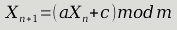

You're a few steps away from the final battle in FFVII. Just a few more platforms to traverse until you reach the last Jenova fight.

You just pray to some Playstation developer to not make you fight again. When you inevitably have an encounter, maybe you wonder why Playstation developers hate you. Or perhaps you wonder "how did they decide to put me into a fight now?!"
You've once again run into pseudo-random chance, created by a pseudo random number generator (PRNG). This is a process to create numbers where a sufficient sample pass set of statistical tests that say a process creates "random-looking enough" numbers.
When it comes to PRNG, there doesn't seem to be an end to the amount of knowledge and information one can gather about it. Statistical tests, prime/coprime constants, Mersenne twister, cycles. And the list goes on.
So, where's the simpleton of a developer to start?
I started with a linear congruential generator . It's a recursive function (recurrence relation in math lingo) that is defined like this:

The constants
a
c
and
m
in this formula are defined internally by the generator.
X_n-1
is the previously generated value, calculated from each step of this process. So we just feed our last value through this system each time we need a new value, and we have what might kinda, sorta, may be a pseudo-random number!
By the way, the first value in the sequence
X_0
is called the seed. For those with programming experience, this is
12345
in (C# lingo)
var rng = new Random(12345)
. This means we can start the sequence off with the same value each time. It also enables us to generate the same sequence on multiple runs of a program, which is handy for testing.
Let's see if we can't build something like this in F#. My first crack at it was this:
let prng seed a c m =
(a * seed + c) % m)
That should do it. In a shoddy way, this is "all you need" if you just compose
prng
with itself a bunch of times:
let prng seed a c m =
(a * seed + c) % m)
let seed, a, c, m = (1024, 123, 233, 312)
seed (* 1024 *)
|> (fun x -> prng x a c m) (* 137 *)
|> (fun x -> prng x a c m) (* 236 *)
|> (fun x -> prng x a c m) (* 245 *)
|> (fun x -> prng x a c m) (* 104 *)
Right? Right. Let's not go down that road.
While kind of worthless, the first stab at this did make me realize that this is recursive "on demand." We just apply the same function repeatedly, but only apply it when we want the next value.
In other words, it feels like a
Seq
but with a twist. We either have to:
- Limit the output to ensure we don't just run indefinitely.
- Be lazy.
I think it's safe to say that going gets tough, the tough get lazy. I should look this up, but eh.
To be lazy with a
Seq
we need to rely on
Seq.delay
and recursion:
-
Seq.delaymakes a sequence where the iterator that defines it is continually "replaced" with a newSeqiterator. That newSeqis defined by the function passed intoSeq.delay. -
on each request to the RNG, what
Seqshould replace it? Itself, of course! So we say that theSeqbinding is defined recursively.
Here's what I came up with:
let buildGenerator seed a c m =
let foldfn cur =
(a * cur + c) % m
let rec generator =
Seq.append [seed] (Seq.delay (fun () -> Seq.map foldfn generator))
generator
The big points here to getting this to work in a lazy fashion:
- We start with a concrete value (the seed in the RNG's case).
- We define our binding for the generator recursively.
-
We use
Seq.delayto create the next iterator to use.
What I would call a more elegant implementation can be found here but these two Sequences do the same thing.
And now we can use a new RNG like so:
let seed, a, c, m = (1024, 123, 233, 312)
let rng = buildGenerator seed a c m
Seq.head (Seq.tail (Seq.tail (Seq.tail rng))) (* 245 *)
Yikes, but neat nevertheless. We now need to find a way to interact with this thing more managably. Next time, we'll take a look at building a module for interacting with an PRNG we've created.